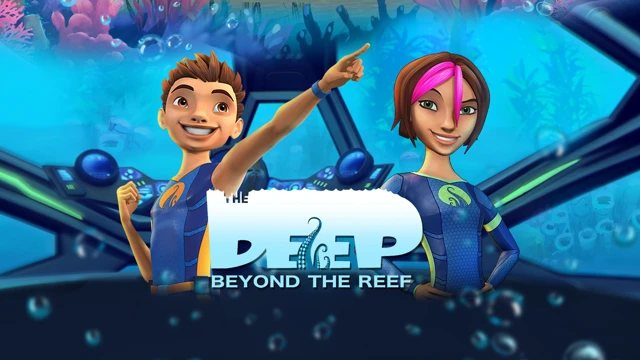
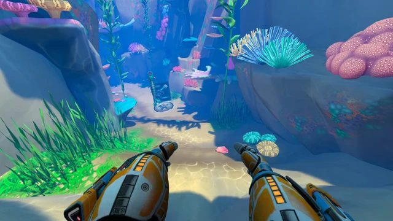
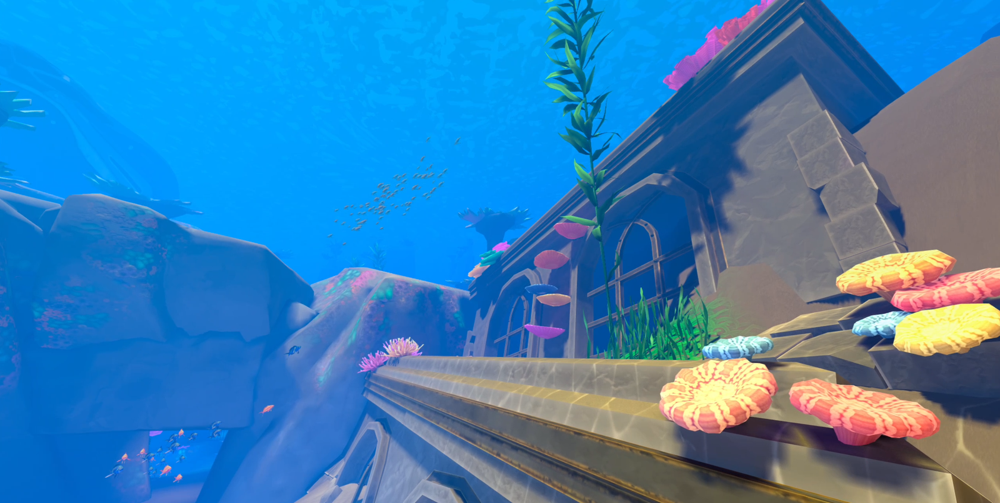
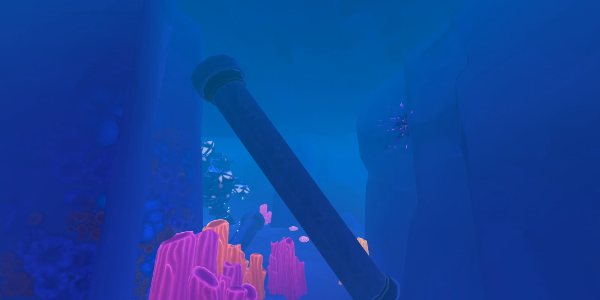
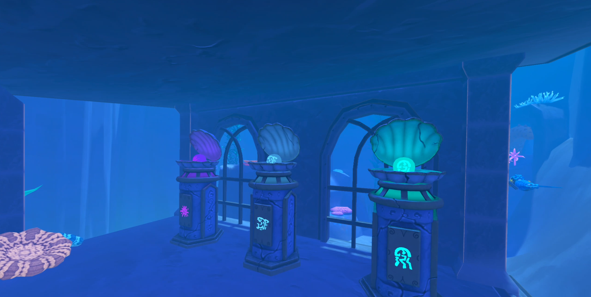
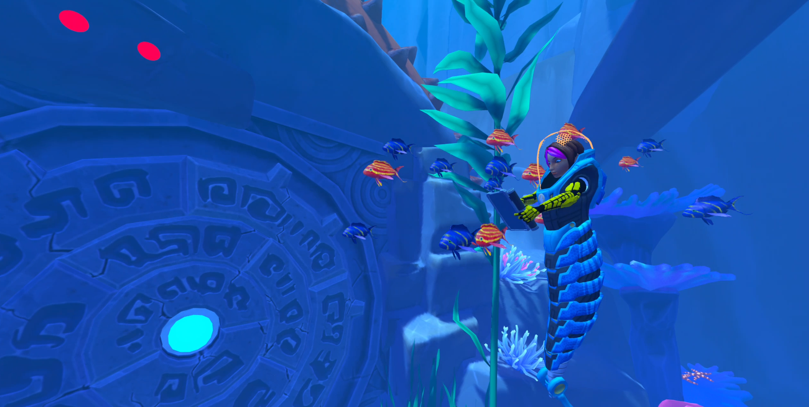
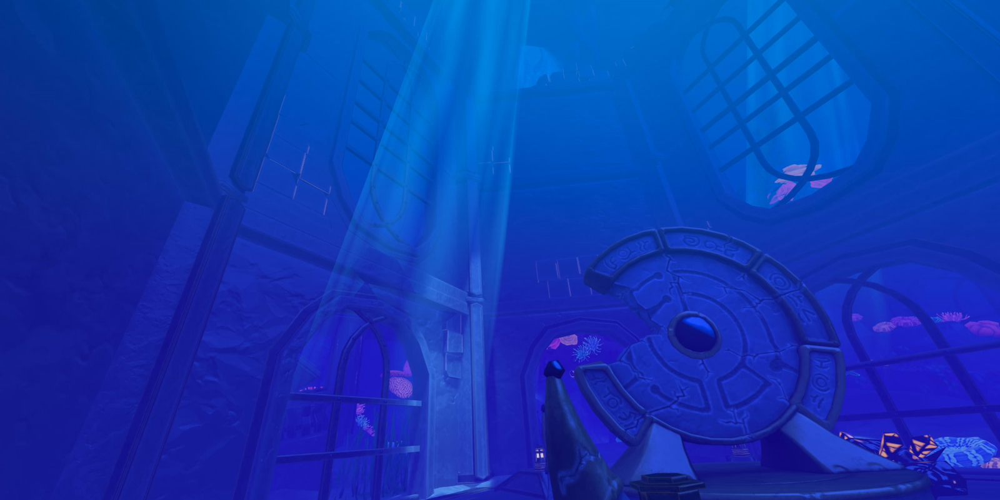
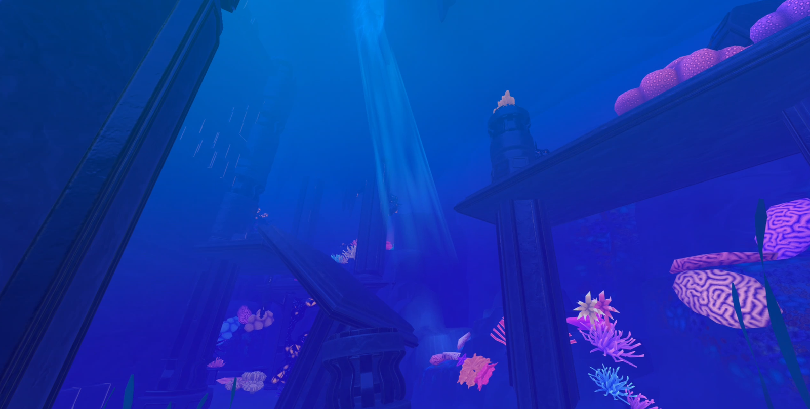
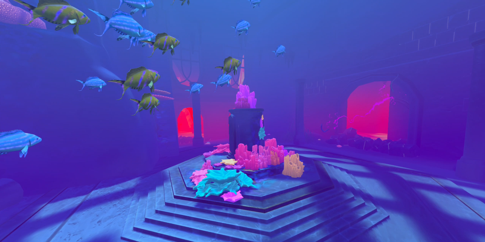
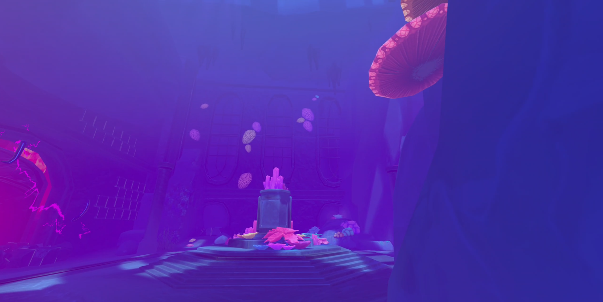

Dark Slope
The Deep: Beyond the Reef
Game Designer · 2023–2025

Project Overview
Project description and my role: A VR underwater exploration game focused on cleaning, discovery, traversal, upgrades, and creature pressure. I worked across the core loop, player tools, hazards, progression, puzzle structure, onboarding, and implementation-facing documentation.
Things I did on the project
- Authored and iterated on the core loop: explore, clean, unlock challenge, solve, upgrade, and progress.
- Designed onboarding flow, level progression, wrist HUD concepts, tool behaviours, and challenge-area structure.
- Owned feature work around the Vulcan Knight suit, the Sonic Laser clean / scan behaviour, shared energy economy, artifact upgrades, and player feedback loops.
- Wrote practical design documentation for artists and programmers, then revised systems through playtest findings and production feedback.
Gallery








